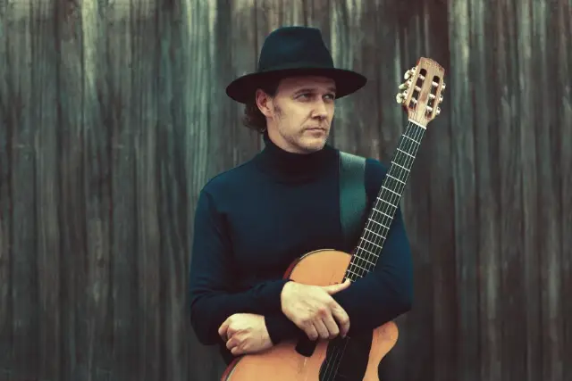

João Suplicy concede entrevista falando sobre seu novo disco solo

João Suplicy, músico completo, que passeia entre o MPB e Rock com naturalidade impecável. Com muito Blues na sua Bossa, algum Rock no seu Samba. Sua essência é musical, independente de estilo.
Responsável pelo programa “Violão ao vivo do quarto”, criado em sua própria página do Facebook e que ainda assim atingiu muito sucesso. Apresentado às segundas-feiras 20:30. O programa já recebeu artistas de renome, como: Criolo, Chico Cezar, Tiê, Kiko Zambianchi, entre outros.
Ele esbanja musicalidade com seu violão. Realizando shows de diversas formas, até mesmo no “Caminhão do João”, caminhonete vintage que já conta com palco, som e luz. Essa criatividade toda não se encontra apenas em seus shows e programas, mas também em seu recente trabalho “João”, um álbum encantador, que vai te hipnotizar.
Tendo contato com esse trabalho solo de João Suplicy, repleto de estilos, participações especiais e emocionantes canções, nós o entrevistamos para trazer a você mais a fundo o que significa esse passo grandioso em sua carreira. Veja só o que o João contou para nós.
(Papo Alternativo) As canções mostradas em seu novo trabalho “João” fogem totalmente do estilo encontrado na “Brothers of Brazil”, o que o fez mudar o rumo dessa forma?
(João Suplicy) Acho, porque as próprias composições são diferentes. As do álbum “João” são todas minhas, com exceção de duas delas. Obviamente não são com meu irmão, se não as lançaria com o “Brothers”. Então, elas por si já são diferentes das músicas que fiz no “Brothers”, que sempre tinham uma participação dos dois de alguma maneira. A maioria das músicas do “Brothers” eram em inglês, também, então isso já difere bastante. Eu não teria colocado nenhuma música em inglês nesse meu álbum “João”. É um disco bem mais brasileiro nesse sentido embora também tenha Rock, se é que o Rock não é meio brasileiro hoje. Acho que o Brasil, hoje, musicalmente, é uma mistura de muitas coisas, e eu também sou assim, e isso está no meu álbum.
A minha maneira de compor sozinho é naturalmente diferente, principalmente porque no “Brothers” a gente compunha mais em inglês. Primeiro porque a gente tinha de fato uma carreira lá fora e visava isso bastante, mas também porque tínhamos mais afinidade um com o outro compondo em inglês do que em português. A maneira de eu me expressar em canções em português é diferente da maneira que ele se expressa e gosta. Então, havia quase uma incompatibilidade da gente em português, salvo algumas exceções. Às vezes a gente conseguia um ponto em comum, mas esse ponto em comum, mesmo quando tinha no “Brothers” (em português) não me agradava tanto quanto o que eu faço em português sozinho. Acho que o Brothers era mais legal em inglês mesmo.
(Papo Alternativo) Podemos notar uma grande diversidade de estilos musicais, que passeiam pelo MPB, pop, rock, blues, bossa nova, baião e até mesmo uma marchinha. Em sua essência com qual desses estilos você mais se identifica?
(João Suplicy) Todos. Eu sou todos eles. Minha identidade musical é múltipla e misturada, assim como o país onde eu nasci também o é. Não só na musica, aliás, também nas próprias etnias. E eu fico à vontade podendo me utilizar de vários gêneros, misturar eles quando eu quiser, transformar um no outro. Então, eu me sinto à vontade pra fazer isso, eu gosto de fazer isso. E às vezes tem uma cobrança mercadológica: você é um produto, você tem que ser uma coisa em que a gente possa colocar um rótulo. Então coloca o rótulo “João” e é isso.
(Papo Alternativo) Na faixa “Um abraço e um olhar”, você pode contar com a participação especial de Zeca Baleiro. Como foi adquirida essa parceria?
(João Suplicy) Essa parceria rolou a partir do meu programa. Eu faço um programa na minha página do Facebook toda segunda-feira às oito e meia da noite onde já recebi inúmeros convidados, desde o Criolo até Mestrinho, Filipe Catto, Nasi, Kiko Zambianchi, Chico César e o Zeca Baleiro. Ele participou de um programa meu onde cantou essa música que eu havia mostrado pra ele porque eu achava que tinha a ver, de certa maneira, com a personalidade dele. E ele foi super legal, topou gravar comigo a música no estúdio, participou do videoclipe, foi um barato.
(Papo Alternativo) Além do Zeca, quais outras pessoas estiveram envolvidas com esse trabalho?
(João Suplicy) Várias pessoas. Tem a participação da Marina de La Riva na faixa “Dicionário do Amor”, que também está na novela do SBT, tem a participação da Fernanda Kostchak tocando um violino lindo na faixa “Tudo ou Nada”. Tive a colaboração também do Maluly na produção da faixa “Solteiro e Vagabundo”, O Edson Guidetti em três ou quatro outras faixas, mas a maior parte das músicas eu mesmo produzi e toquei a maioria dos instrumentos.
(Papo Alternativo) A canção “Dicionário do Amor” já foi retratada em outro álbum seu, o “Caseiro”. Por que logo essa música foi escolhida para ganhar uma nova versão?
(João Suplicy) Porque eu quis lançá-la no dia dos namorados e achei que ficaria interessante com uma voz feminina junto, então convidei a Marina de La Riva e achei que ficou muito legal. Aí rapidamente ela entrou na novela do SBT e eu pensei “Poxa, eu curti tanto essa versão, ela está tocando na novela… Vou colocá-la no CD também”. Mesmo que já tenha sido lançada antes, eu gosto mais dessa versão. Por isso eu a coloquei no CD.
(Papo Alternativo) Quais as expectativas que você visa alcançar com esse trabalho?
(João Suplicy) Eu viso alcançar as pessoas. Meu desejo é que ouçam as músicas e com algumas elas se divirtam, com outras elas se emocionem, com outras elas tenham vontade vir no meu show ou passem a me acompanhar, por exemplo, no meu programa no Facebook, onde eu mostro até outras coisas diferentes muitas vezes. Então, o que busco é fazer meu trabalho chegar às pessoas e as que se identificarem com alguma coisa, as que gostarem que passem a acompanhar mais, ir aos shows, ouvir… e é isso. Acho que é isso que praticamente todo artista quer, que sua arte chegue ao público.
(Papo Alternativo) Quais as novidades que podemos esperar para ainda esse ano?
(João Suplicy) Esse ano meu foco é divulgar o álbum. Estou fazendo os shows do álbum normalmente com um trio, eu e mais dois músicos. Uma formação enxuta e que vem se mostrando muito eficaz. Mais do que eficaz, aliás, está muito bacana mesmo, estou gostando muito. Então, a ideia é rodar o Brasil todo com esses shows, e esse é o projeto até o fim do ano, no mínimo.